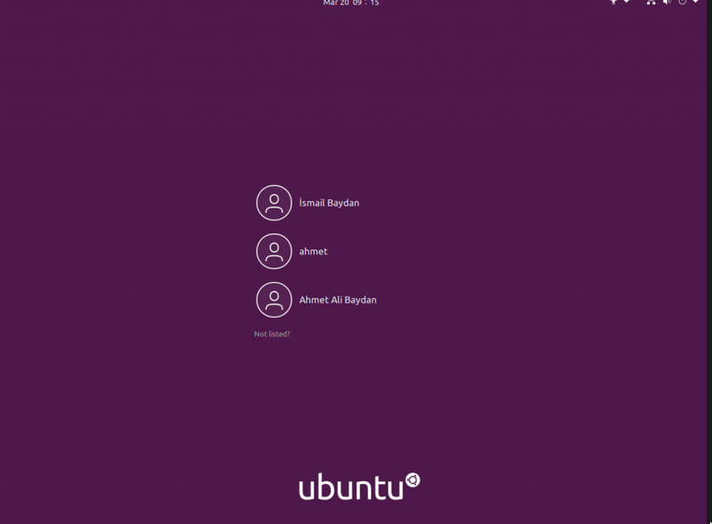

Linux Introduction
Abhijit Paul
Acknowledgement of Ignorance
- Operating System and System Programming(4th Semester)
This guide will help you get started.
Linux - Startup Task
- Boot up linux in your computer. In the
grubmenu, chooseUbuntu.
If your computer do not have linux yet, follow the instructions with your friend who has it.
Login as IIT
Every computer has a default computer named IIT. Our staffs create it as a default user. So login as user IIT. Later, we will create a user account for you.
Detailed Guide

Navigate Around a bit!
Explore linux!
- Open the file browser.
Create a new User for you!
Security and Management issue
If everyone uses the same IIT account, what will happen?
Creating User Account using GUI
Settings -> Search Users -> Add or Remove Users
Detailed Guide
Using Terminal
- Don't use any space in your user name!
- Remember your username and password!
sudo adduser YOUR_NAME
Press Enter if you wish to accept the default.
sudo deluser --remove-home test // Personal Note
Giving Administrator Rights
In linux, we need administrator rights/root access to install anything, to change any important system setting. And as we go, we will install IntellIJ, wireshark, vscode etc. So we need root access.
sudo usermod -aG sudo USER_NAME
Changing Password
You can change your password anytime with sudo.
sudo passwd USER_NAME
Logout and Login!
Now logout from user IIT and login to your account!
Things you need as a first year
ls command
ls
Output:
1647085180.png a.out Documents gdrive-mount-point Local NLP-Library Pictures read.txt Templates Videos
alice.txt Desktop Downloads install-arch-packages Music Org-Roam-Files Public temp2.cpp Temporary write.txt
Task
Getting acquianted with terminal! Lets make a simple program that adds two number.
- Open terminal (Shortcut: Ctrl + Alt + t)
- Create a file
touch add-numbers.c
- Open the file in gedit/"notepad" to write code in it.
gedit add-numbers.c // PRESS TAB for autocompletion
- Compile it using gcc.
gcc add-numbers.c // PRESS TAB for autocompletion
- Run the program.
ls
./a.out
Code
#include<stdio.h>
int main(){
int a = 3, b=4;
printf("3+4=%d\n",a+b);
return 0;
}
Some useful commands
- cd
- clear/ Ctrl+L
- mkdir
- rm
- mv
- cp
Some Touring if we have time
Why Linux?
- As a developer, you will eventually shift to it. The faster, the better.
- Support opensource and disregard propietary garbage.
- Faster.
Dual Boot
- Analogy of Music
What are distribution?
Which should you choose?
- Ubuntu
- Linux Mint
- CentOS
- Arch Linux
- Zorin OS
Conclusion
The way to master linux is using it.